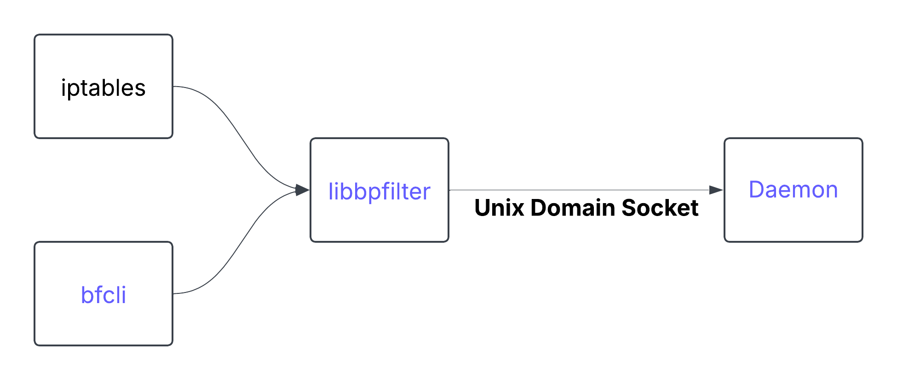
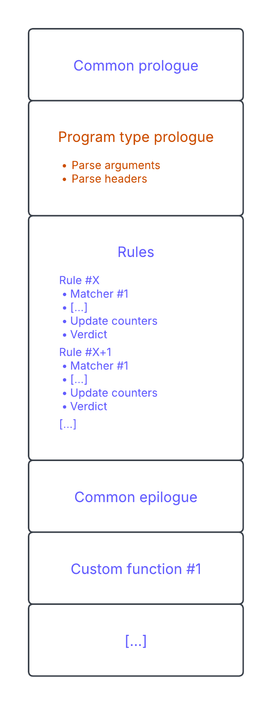
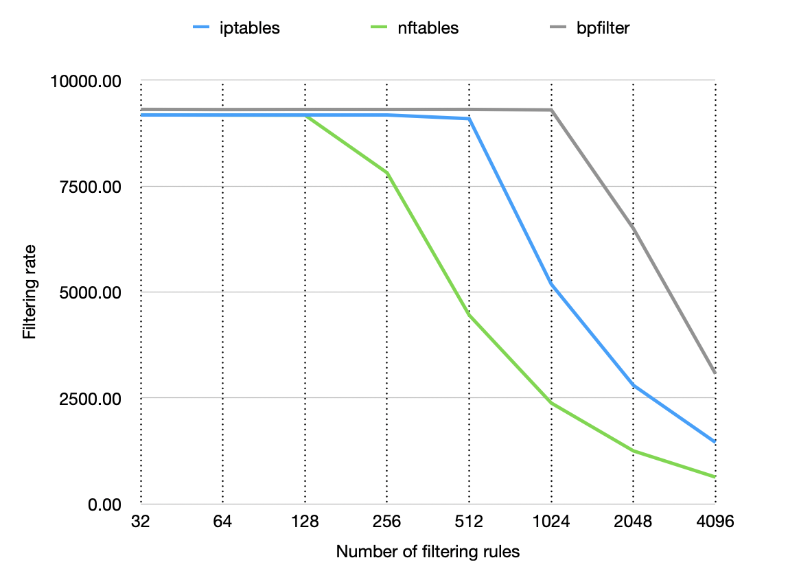

Faster firewalls with bpfilter
From servers in a data center to desktop computers, many devices communicating on a network will eventually have to filter network traffic, whether it's for security or performance reasons. As a result, this is a domain where a lot of work is put into improving performance: a tiny performance improvement can have considerable gains. Bpfilter is a project that allows for packet filtering to easily be done with BPF, which can be faster than other mechanisms.
Iptables was the standard packet-filtering solution for a long time, but has been slowly replaced by nftables. The iptables command-line tool communicates with the kernel by sending/receiving binary data using the setsockopt() and getsockopt() system calls. Then, for each network packet, iptables will compare the data in the packet to the matching criteria defined in a set of user-configurable rules. Nftables was implemented differently: the filtering rules are translated into Netfilter bytecode that is loaded into the kernel. When a network packet is received, it is processed by running the bytecode in a dedicated virtual machine.
Nftables was in turn supplanted in some areas by BPF: custom programs written in a subset of the C language, compiled and loaded into the kernel. BPF, as a packet-filtering solution, offers a lot of flexibility: BPF programs can have access to the raw packet data, allowing the packet to continue its path through the network stack, or not. This makes sense, since BPF was originally intended for packet filtering.
Each tool described above tries to solve the same problem: fast and efficient network-traffic filtering and redirection. They all have their advantages and disadvantages. One generally would not write BPF-C to filter traffic on their laptop and trade the performance of BPF for the ease of use of iptables and nftables. In the professional world, though, it can be worth the effort to write the packet-filtering logic to get as much performance as possible out of the network hardware at the expense of maintainability.
Based on this observation, one might think we would welcome an alternative that combines the ease of use of nftables and performance of BPF. This is where bpfilter comes in. In 2018, Alexei Starovoitov, Daniel Borkmann, and David S. Miller proposed bpfilter as a way to transparently increase iptables performance by translating the filtering rules into BPF programs directly in the kernel ... sort of. Bpfilter was implemented as a user-mode helper, a user-space process started from the kernel, which allows for user-space tools to be used for development and prevents the translation logic from crashing the kernel.
Eventually, a proof of concept was merged, and the work on bpfilter continued in a first and second patch series by Dmitrii Banshchikov, and a third patch series that I wrote. Eventually, in early 2023, Starovoitov and I decided to make bpfilter a freestanding project, removing the user-mode helper from the kernel source tree.
Technical architecture
From a high-level standpoint, bpfilter (the project) can be described as having three different components:
- bpfilter (the daemon): generates and manages the BPF programs to perform network-traffic filtering.
- libbpfilter: a library to communicate with the daemon.
- bfcli: a way to interact with the daemon from the command line. That's the tool one would use to create a new filtering rule.

To understand how the three components interact, we'll follow the path of a filtering rule, from its definition by the user, to the filtered traffic.
bfcli uses a custom domain-specific language to define the filtering rules (see the documentation). The command-line interface (CLI) is responsible for taking the rules defined by the user and sending them to the daemon. bfcli was created as a way to easily communicate with the daemon, so new features can be tested quickly without the requirement for a dedicated translation layer. Hence, bfcli supports all of the features bpfilter has to offer.
It's also possible to use iptables, as long as it integrates the patch provided in bpfilter's source tree. This patch adds support for bpfilter (using the –bpf option), so the rules are sent to bpfilter to be translated into a BPF program instead of sending them to the kernel. Currently, when used through the iptables front end, bpfilter supports filtering on IPv4 source and destination address, and IPv4 header protocol field. Modules are not yet supported.
Nftables support is a bit more complicated. A proof of concept was merged last year, but bpfilter has evolved a lot since then to introduce new features, and the translation layer is broken. The challenge comes from the format used to define the rules: nftables sends Netfilter bytecode to the kernel, the proof of concept sends this bytecode to bpfilter instead, which has to transform it into its internal data format. The other bpfilter developers and I expect to refactor it in 2025 and create a generic-enough framework to easily expand nftables support.
Depending on the source of the request, the format of the data is different: iptables sends binary structures, nftables sends bytecode, and bfcli sends different binary structures. The rules need to be translated into a generic format so that bpfilter can process every rule similarly.
The front end is also responsible for bridging gaps between the CLI and the daemon's expectations: iptables has counters for the number of packets and bytes processed by each rule, but bpfilter only creates such counters when requested, so the iptables front end is in charge of doing so.
Not all front ends are created equal, though. Iptables can only use BPF Netfilter hooks, which map to iptables's tables; it can't request for an express data path (XDP) program to be created. bfcli on the other hand, is designed to support the full extent of the daemon's features.
The logical format used by bpfilter to define filtering rules is similar to the one used by iptables and nftables: a chain contains one or more rules to match network traffic against, and a default action if no rule is matched (a "policy"). Filtering rules contain zero or more matching criteria; if all criteria match the processed packet, the verdict is applied. In the daemon, a chain will be translated into a single BPF program, attached to a hook. That program is structured like this:

At the beginning, the BPF program is not much more than a buffer of memory to be filled with bpf_insn structures. All of the generated BPF programs will be structured similarly: they start with a generic prologue to initialize the run-time context of the program and save the program's argument(s) on the stack. Then the program type prologue: depending on the chain, the arguments given to the program are different, and we need to continue initializing the run-time context with program-type-specific information. This section will contain different instructions if the program is meant to be attached to XDP or one of the other places a BPF program can be attached to the kernel's networking subsystem.
Following that are the filtering rules, which are translated into bytecode sequentially. The first matching rule will terminate the program. Finally, there is the common epilogue containing the policy of the chain. Eventually, bpfilter will generate custom functions in the BPF programs to avoid code duplication, for example to update the packet counters. Those functions are added after the program's exit instruction, but only if they are needed.
Throughout the programs, there are times we need to interact with other BPF objects (e.g. a map), even though those objects do not exist yet. For example, a rule might need to update its counters when it matches a packet. While counters are stored in a map, it doesn't exist yet at the time the bytecode is generated. Instead, a "fixup" instruction is added, which is an instruction to be updated later, when the map exists and its file descriptor can be inserted into the bytecode. Fixups are used extensively to update a map file descriptor, a jump offset, or even a call offset.
When the chain has been translated into BPF bytecode, bpfilter will create the required map and update the program accordingly (processing the fixups described above). Different maps are created depending on the features used by the chain: an array to store the packet counters, another array to store the log messages if something goes wrong, a hash map to filter packets based on a set of similarly formatted data, etc.
Then the program is loaded, and the verifier will ensure the bytecode is valid. If the verification fails due to a bug in bpfilter, the program is unloaded, the maps are destroyed, and an error is returned. On success, the program and its maps are now visible on the system.
Finally, bpfilter attaches the program to its hook using a BPF link. Using links allows for atomic replacement of the program if it has to be updated.
Performance
When it comes to filtering performance, the main factor is: how big is the ruleset? In other words, how many rules can we define before the performance deteriorates? There are ways to mitigate this issue, but you can't get away from it completely. Thanks to BPF, bpfilter can raise this limit, allowing bigger rulesets before the performance starts to drop, as we can see below.

The benchmark presented is synthetic, but it demonstrates the impact of the number of rules on the filtering rate for a 10G network link (9300Mb/s baseline). Note the horizontal log scale — bpfilter handles twice as many rules as iptables and eight times as many as nftables before seeing a drop off in performance. All of the filtering rules are attached to the pre-routing hook, and the added rules filter out additional IP addresses.
Future plans
From a user perspective, all of the features currently supported by bpfilter are documented on bpfilter.io. The project is evolving quickly, and hopefully bugs are being fixed faster than they are introduced.
The project roadmap is meant to be as transparent as possible, so it is available on the project's GitHub repository. The main highlights for the first half of 2025 would be proper support for nftables, integration of user-provided (and compiled) BPF programs, and generic sets.
Free feel to try the project and provide feedback, I would happily address it. You can also jump into the code and contribute if that's what you like. I'm always available to answer questions and mentor any contributor.
| Index entries for this article | |
|---|---|
| Kernel | BPF/bpfilter |
| GuestArticles | Deslandes, Quentin |
Posted May 14, 2025 19:23 UTC (Wed)
by champtar (subscriber, #128673)
[Link] (1 responses)
Posted May 15, 2025 21:12 UTC (Thu)
by qdeslandes (guest, #131161)
[Link]
Posted May 14, 2025 19:31 UTC (Wed)
by npws (subscriber, #168248)
[Link] (5 responses)
Another important metric, for some people at least, is update performance. Is my assumption correct, that every update requires a full rebuild of the ruleset? How do counters and other stateful objects deal with updates?
Posted May 14, 2025 19:35 UTC (Wed)
by npws (subscriber, #168248)
[Link] (2 responses)
Posted May 15, 2025 23:54 UTC (Thu)
by qdeslandes (guest, #131161)
[Link] (1 responses)
Absolutely, that is why I mentioned the benchmark is synthetic. The purpose of the benchmark is to show the main point of bpfilter: generating faster rules, and as the ruleset grows, it's even more visible. Feature wise, bpfilter supports sets but overall, it's far from the extensive set of features provided by nftables.
Now, the thing when it comes to benchmarking firewalls is that there is no single ruleset that can be used to summarise and rank all the technologies available. bpfilter supports sets, which I benchmarked against nftables, and there is no noticeable difference: it's only a few BPF instructions, and a few netfilter instructions, there isn't enough to provide meaningful results. When I looked into how firewalls are benchmarked, most (if not all) of the results I've found simply increase the ruleset size.
> Another important metric, for some people at least, is update performance. Is my assumption correct, that every update requires a full rebuild of the ruleset? How do counters and other stateful objects deal with updates?
If you send a single chain to the daemon, not the whole ruleset will be rebuilt, only that chain. Then, the existing BPF program for that chain will be atomically replaced on the host. Ideally, the unchanged rules wouldn't be regenerated, and the unmodified BPF maps wouldn't be destroyed/recreated, there are plans for it, but it's mostly a matter of priorities. The same goes with the counters.
> Actually one more question, was this benchmark done using multiqueue and multiple cores, or just a single core? If the later, how does bpfilter fare with multicore?
The benchmark was single core, I haven't run a benchmark with multicore setup.
Posted May 16, 2025 8:06 UTC (Fri)
by hailfinger (subscriber, #76962)
[Link]
One of the main challenges in benchmarking firewall rule sets is that people disagree on what and how to measure. If you measure a rule structure which suits the in-kernel representation of your favourite firewalling framework, you're obviously going to have a performance advantage. I think the nf-HiPAC benchmarks were designed to use rulesets exercising worst-case performance for their own implementation as opposed to best-case performance, but that seems to be an outlier.
It all depends on whether that framework is optimized for linear rules, trees, sets or single-rule multi-matches. Accelerating single matches will help, but often the improvements in algorithmic complexity (e.g. with a whole-ruleset compiler or even manual ruleset rewrites focused on optimal structure) yield dramatic performance benefits for large rule sets even if single matches are slow.
Posted May 16, 2025 7:48 UTC (Fri)
by hailfinger (subscriber, #76962)
[Link] (1 responses)
Then there's bpf-iptables https://github.com/mbertrone/bpf-iptables .
A performance comparison between nf-HiPAC and bpfilter would be highly interesting. The challenge is to find some hardware which works well with Linux 2.6.14 (last version officially supported by nf-HiPAC) and has a 10 Gigabit ethernet interface.
Posted May 16, 2025 8:02 UTC (Fri)
by npws (subscriber, #168248)
[Link]
Posted May 14, 2025 21:01 UTC (Wed)
by fman (subscriber, #121579)
[Link]
Posted May 14, 2025 22:03 UTC (Wed)
by hailfinger (subscriber, #76962)
[Link] (1 responses)
I really like nftables syntax because it allows specifying multiple conditions (e.g. port 80+443) in a single rule, simplifying rulesets greatly.
Posted May 15, 2025 21:50 UTC (Thu)
by qdeslandes (guest, #131161)
[Link]
I thought about it lately, it would be simpler than translating the bytecode.
> Nftables had some corner cases (in the past, not sure about the latest release) where functionally identical rules had differing effects. That may have been a parser bug or an implementation bug in the kernel, but it's hard to know without inspecting the generated nft bytecode in detail. If you're planning to run regression tests for bpfilter-backed nftables vs. classic nftables, that might be relevant.
That's good to know, thanks!
Posted May 15, 2025 6:53 UTC (Thu)
by wtarreau (subscriber, #51152)
[Link]
In addition, the branching mechanisms in iptables/nftables allow to build a policy as a tree, something that some other products do not support at all. So one rule of one solution doesn't equal one rule in another solution.
Posted May 15, 2025 13:20 UTC (Thu)
by cytochrome (subscriber, #58718)
[Link] (1 responses)
Posted May 15, 2025 23:55 UTC (Thu)
by qdeslandes (guest, #131161)
[Link]
nftables sets ?
Same for iptables + ipset.
nftables sets ?
Performance
Performance
Performance
Performance
Performance
Performance
The PF in BPF
nftables support
Nftables had some corner cases (in the past, not sure about the latest release) where functionally identical rules had differing effects. That may have been a parser bug or an implementation bug in the kernel, but it's hard to know without inspecting the generated nft bytecode in detail. If you're planning to run regression tests for bpfilter-backed nftables vs. classic nftables, that might be relevant.
nftables support
Rules count
Some firewalls will for example require 10 rules to allow 10 ports, or even 20 rules for 10 ports + logging, while others will use a multiport match (or a set) and can accept and log at once.
Number of filtering rules
Number of filtering rules